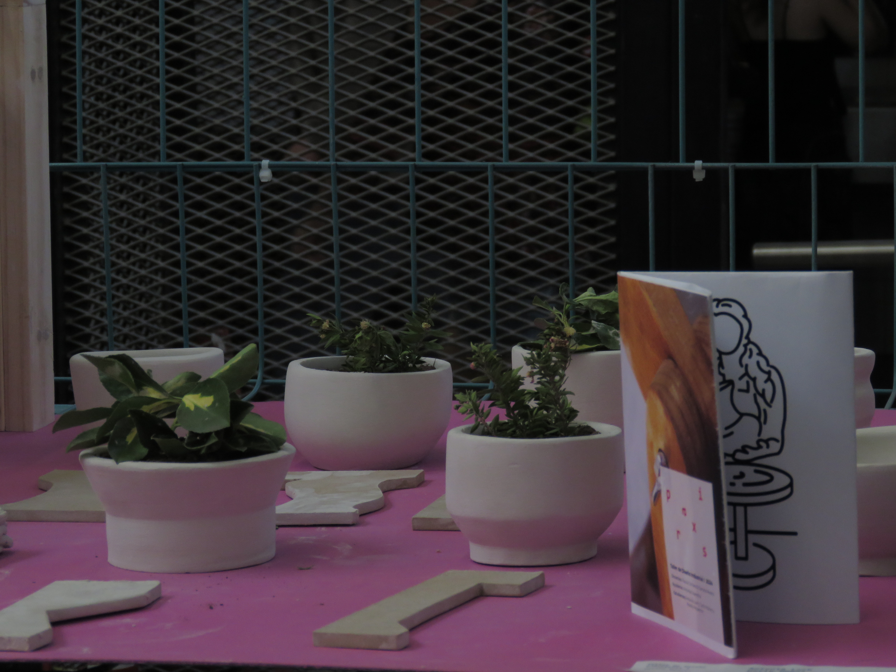
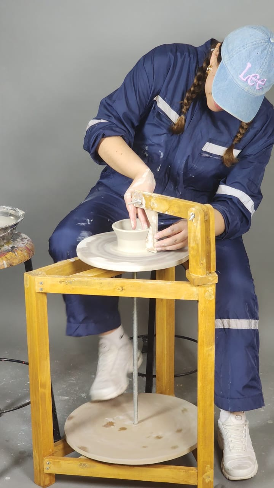
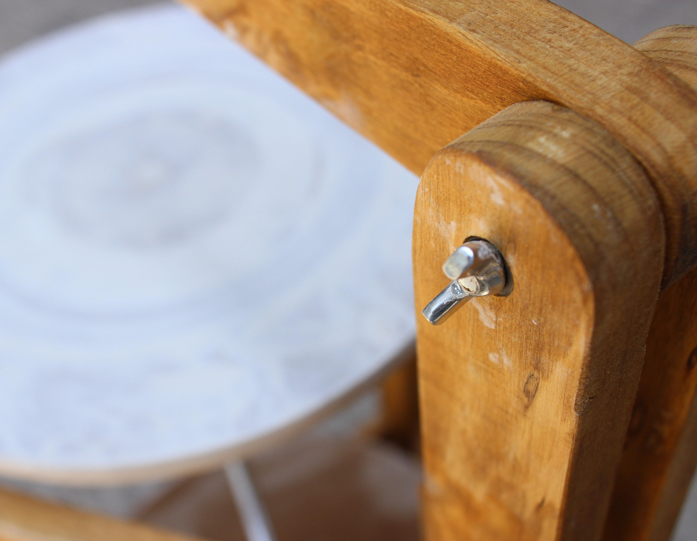

06 / 08
Torno patero
El proyecto consistió en el diseño y construcción de un torno de alfarero de tipo patero, desarrollado en colaboración con Carla Núñez y Narely Riquelme. Accionado mediante impulso de pie, su estructura, fabricada en madera, integra un volante inferior de gran masa que almacena inercia rotacional, transmitida mediante un eje central hacia la cabeza donde se centra y trabaja la pieza.
A partir de este torno se desarrolló una serie de maceteros, torneados individualmente y trabajados en sus proporciones de boca, cuerpo y base, obteniendo un resultado funcional destinado al cultivo de plantas.
El proyecto integra tanto la fabricación de la herramienta como la técnica de torneado, evidenciando el dominio del proceso completo: desde la construcción del equipo hasta la producción de la pieza final.


